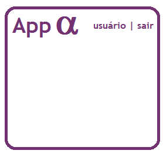

Aplicativo desenvolvido para a gestão de produtos em pequenos estabelecimentos: mercados, farmácias, pet shops. Através do app, o usuário poderá: 1. criar/logar em uma conta própria, 2.registrar o estabelecimento queestá prestando o serviço, 3. registrar os produtos com seus respectivos dados, 4. consultar os produtos registrados previamente.
1. Na tela inicial do app, o usuário poderá fazer o login utilizando um e-mail e senha. Se o usuário não tiver uma conta, poderá criar uma preechendo o formulário de registro. 